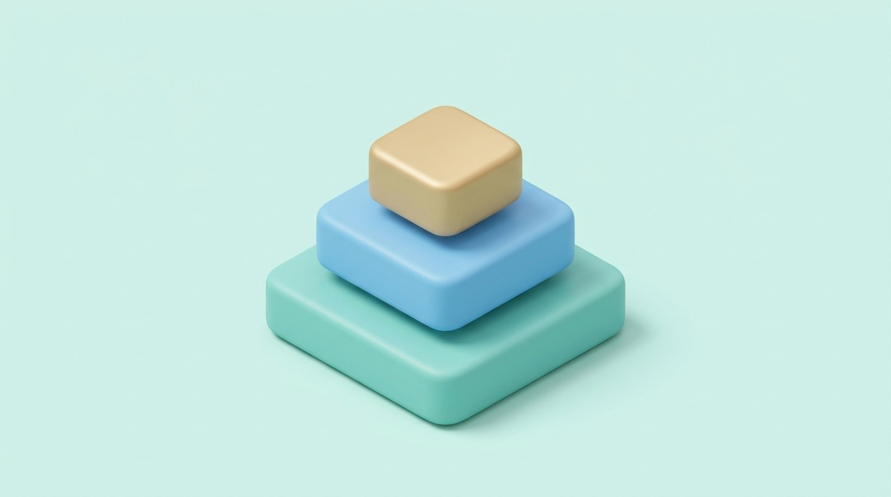
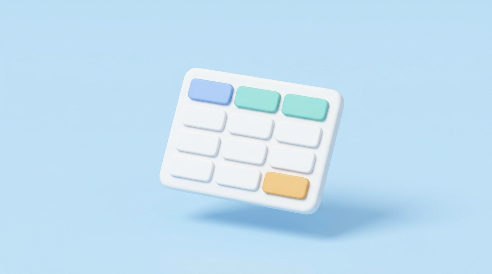
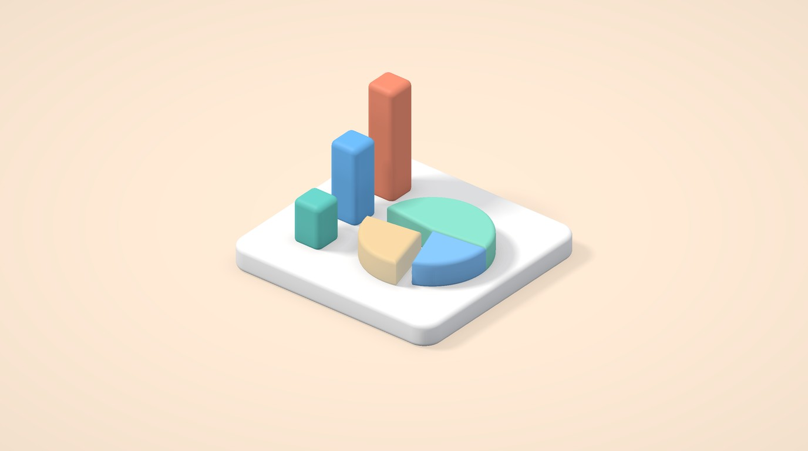
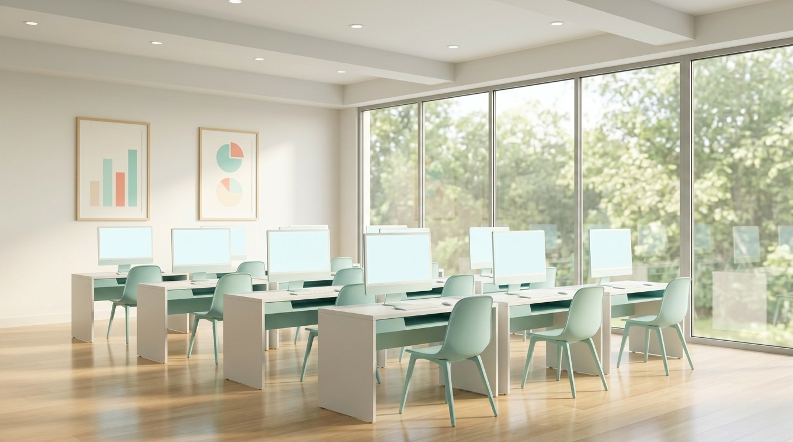
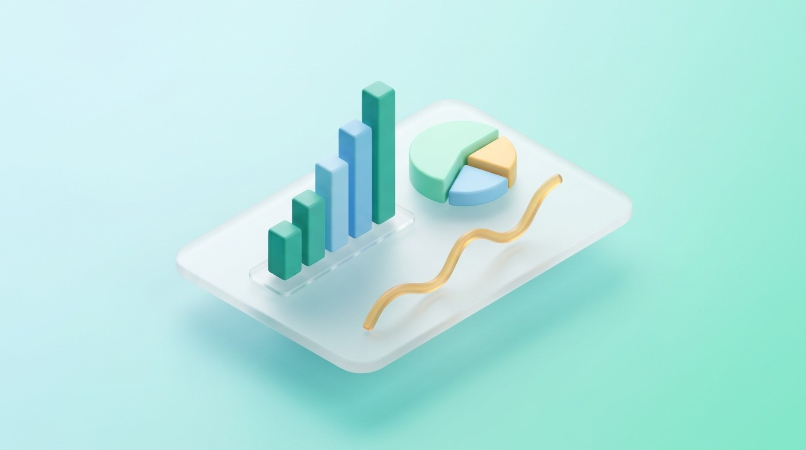
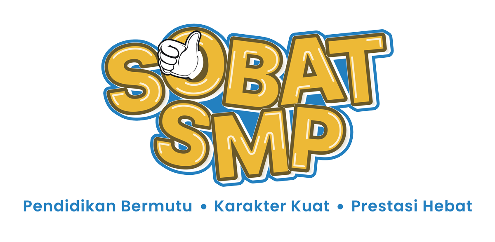

Analisis Data Mengungkap Cerita di Balik Angka
💡 Panduan Singkat Menggunakan Media Pembelajaran Interaktif (MPI)
🧭 Tombol Navigasi & Kontrol
Kembali ke halaman sampul utama (cover) kapan saja.
Membuka menu utama untuk memilih materi, simulasi, atau latihan.
Berpindah halaman berurutan (bisa juga memakai tombol panah keyboard).
Atur besar tampilan, ukuran huruf, atau bisukan efek suara di pojok kanan atas.
🎯 Alur Pembelajaran Analisis Data
Kuasai Piramida DIKW, jenis data, rumus spreadsheet langsung, animasi alur data, uji grafik jujur, hingga deteksi bias.
Bersihkan data kotor, susun rumus otomatis, pilih grafik tepat, lalu audit laporan manipulatif hingga raih 4 bintang!
Selesaikan Pilihan Ganda, Benar/Salah, Menjodohkan, dan Mengurutkan Siklus Analisis Data lengkap dengan pembahasan.
Tinjau kembali intisari seluruh materi dan tuliskan refleksi belajarmu di bagian akhir modul.
🎯 Setelah mengikuti pembelajaran interaktif ini, peserta didik diharapkan mampu:
SUM, AVERAGE, MIN, MAX, COUNTIF).



🔺 1. Piramida DIKW: Dari Fakta ke Keputusan
Data mentah baru berharga setelah naik tingkat melalui konteks dan analisis:
34, 36, 33, 38.📡 2. Sumber Data
Dikumpulkan langsung oleh peneliti melalui survei kelas, wawancara, atau pengukuran sendiri.
Diperoleh dari pihak lain yang sudah mengolahnya: situs resmi BPS, WHO, atau arsip perpustakaan sekolah.
🗂️ 3. Klasifikasi Empat Jenis Data
Setiap data di sekitar kita terbagi menjadi angka (Kuantitatif) dan kategori (Kualitatif):
Angka bulat hasil menghitung (jumlah siswa hadir, banyak buku).
Angka bisa desimal hasil mengukur (tinggi 161,5 cm, waktu lari).
Kategori setara tanpa urutan (hobi, warna favorit, kota lahir).
Kategori memiliki tingkatan/urutan (Kurang, Cukup, Sangat Puas).
🎯 Klik istilah di sebelah kiri, lalu klik penjelasan yang tepat di sebelah kanan untuk menghubungkan garis!
📋 1. Empat Metode Pengumpulan Data
Pilih cara mengumpulkan data sesuai tujuan penelitianmu:
Daftar pertanyaan terstruktur (Google Forms atau kertas) dengan pilihan ganda atau skala Likert 1–5.
Mengamati dan mencatat kejadian nyata (misal menghitung pengunjung kantin tiap jam istirahat).
Tanya jawab langsung dengan narasumber untuk menggali alasan atau pendapat mendalam.
Menguji variabel tertentu (contoh: membandingkan kecepatan mengetik dengan pencahayaan berbeda).
🛡️ Sampling & Etika: Ambil sampel acak yang mewakili populasi (bukan teman se-geng saja), minta persetujuan responden (informed consent), dan jaga anonimitas/privasi nama siswa!
🧮 2. Anatomi & Rumus Spreadsheet
Data tersusun dalam Baris (angka 1, 2...), Kolom (huruf A, B...), Sel (B2), dan Rentang (B2:B5). Semua rumus wajib diawali =:
=SUM(B2:B5) ➔ Jumlah total=AVERAGE(B2:B5) ➔ Rata-rata=MAX / MIN ➔ Tertinggi / Terkecil=COUNTIF(B2:B5,">=80") ➔ Hitung bersyarat| A (Nama) | B (Nilai) | C (Status) | |
|---|---|---|---|
| 2 | Andi | 80 | Tuntas |
| 3 | Budi | 92 | Tuntas |
| 4 | Citra | 76 | Tuntas |
| 5 | Dimas | 88 | Tuntas |
🔍 Panduan Pengamatan Siklus Data (Klik Tahap):
Catatan survei siswa & transaksi kantin direkam menjadi baris data awal.
Duplikat dan nilai aneh dibersihkan, lalu rumus SUM & AVERAGE dihitung.
Angka terstruktur diubah menjadi grafik batang & garis yang jujur dan mudah dibaca.
Pola dari grafik disimpulkan menjadi aksi nyata, misalnya menambah stok menu sehat favorit.
📊 1. Memilih Jenis Grafik yang Tepat
Setiap grafik punya fungsi khusus agar pesan data langsung tertangkap mata:
Membandingkan nilai antar kategori berbeda (contoh: peminjam buku per kelas).
Menampilkan perubahan tren dari waktu ke waktu (contoh: nilai ulangan Jan–Mei).
Menunjukkan proporsi/persentase terhadap 100% total (maksimal 5–6 irisan kategori).
Mengamati hubungan dua variabel angka (contoh: durasi belajar vs nilai ujian).
⚖️ 2. Aturan Emas Visualisasi Jujur
📐 1. Empat Ukuran Statistik Deskriptif
Contoh skor kuis 7 siswa terurut: 70, 75, 80, 80, 85, 90, 95
Jumlah semua nilai (575) dibagi banyak data (7). Peka terhadap nilai ekstrem (outlier).
Nilai tepat di tengah setelah data diurutkan. Tahan terhadap satu nilai ekstrem.
Nilai paling banyak frekuensinya (80 muncul 2 kali). Cocok untuk data kategori favorit.
Selisih nilai tertinggi dikurangi terendah (95 − 70 = 25) untuk mengukur sebaran data.
📖 Data Storytelling: Gabungkan Fakta Angka + Konteks Sekolah + Rekomendasi Solusi agar hasil analisis mudah dipahami semua orang!
🔗 2. Hati-hati: Korelasi ≠ Kausalitas!
Saat penjualan es krim naik di bulan kemarau, angka pengunjung kolam renang & insiden tenggelam ikut naik. Apakah es krim penyebabnya? Bukan! Ada faktor ketiga: cuaca panas yang mendorong orang membeli es krim sekaligus berenang.
⚠️ 3. Tiga Jebakan Bias dalam Data
🏫 Aturan Analis Jujur: Tarik kesimpulan hanya dari bukti data menyeluruh, akui keterbatasan sampel, dan hindari generalisasi berlebihan.
Laboratorium Detektif Data
Saatnya beraksi sebagai Analis Data Sekolah! Taklukkan 4 misi interaktif:
Klinik Data (bersihkan data kotor), Lab Rumus Spreadsheet (susun formula otomatis),
Studio Pilih Grafik, hingga Audit Grafik Menyesatkan & Bias Data!
| No | Nama Siswa | Uang Saku | Nilai Kuis (0–100) | Status |
|---|
Latihan Evaluasi
Uji pemahamanmu secara menyeluruh melalui
4 jenis tantangan interaktif:
A. Pilihan Ganda (10 soal) • B. Benar/Salah (5 soal)
C. Menjodohkan (5 pasang) • D. Mengurutkan Siklus Analisis Data
85, 78, 92, 80 yang belum memiliki keterangan label atau konteks disebut sebagai...C2:C25?150 padahal skor maksimal 100. Langkah wajib sebelum menghitung rata-rata adalah...70, 75, 80, 90, 95. Berapakah nilai Median kumpulan data tersebut?=) harus selalu diketik di awal rumus agar sel otomatis melakukan perhitungan.Klik istilah analisis data di kiri, lalu klik fungsi/definisinya yang tepat di kanan untuk menghubungkan garis.
Seret kotak tahapan di bawah ini hingga membentuk urutan kerja proyek analisis data yang benar dari awal hingga akhir.
🔺 1. Piramida DIKW & Klasifikasi Data
Alur nilai informasi: Data (Fakta Mentah) ➔ Informasi (Konteks) ➔ Pengetahuan (Pola) ➔ Keputusan (Aksi).
🧮 2. Pengumpulan, Pembersihan & Spreadsheet
| Tahap / Rumus | Fungsi Utama |
|---|---|
| Data Cleaning | Hapus duplikat, perbaiki outlier, & seragamkan format angka. |
=SUM / =AVERAGE |
Menjumlahkan dan mencari rata-rata rentang sel secara instan. |
=MIN / =MAX |
Menemukan nilai terkecil dan nilai terbesar dari dataset. |
=COUNTIF |
Menghitung banyak sel yang memenuhi syarat/kriteria tertentu. |
📊 3. Visualisasi Tepat & Prinsip Kejujuran
0, cantumkan judul, satuan, dan sumber data.
🔍 4. Statistik Deskriptif & Anti-Bias
• Mean, Median, Modus, Range membantu meringkas ribuan angka secara objektif.
• Korelasi ≠ Kausalitas: Waspadai variabel ketiga sebelum menyimpulkan sebab-akibat.
• Hindari Bias: Selection Bias, Confirmation Bias, & Cherry Picking.
- Kurikulum Merdeka (BSKAP No. 032/H/KR/2024) — Capaian Pembelajaran Mata Pelajaran Informatika SMP Fase D, Elemen Analisis Data (AD), Kemendikdasmen RI.
- Buku Siswa Informatika SMP Kelas VII — Bab Analisis Data (Pengenalan Perkakas Pengolah Lembar Kerja & Statistik Dasar), Pusat Perbukuan Kemendikdasmen.
- Buku Siswa Informatika SMP Kelas VIII — Bab Analisis Data (Pencarian, Visualisasi, & Peringkasan Data), Pusat Perbukuan Kemendikdasmen.
- Cairo, A. (2019). How Charts Lie: Getting Smarter about Visual Information. W. W. Norton & Company.
- Knaflic, C. N. (2015). Storytelling with Data: A Data Visualization Guide for Business Professionals. Wiley.
- Modul & Storyboard MPI Analisis Data — "Analisis Data: Mengungkap Cerita di Balik Angka", Tim Pengembang SMP Negeri 2 Lamongan, 2026.

assets/bg-data-clean.jpg
assets/analisis_data.jpgassets/thumb_materi_1.jpgassets/thumb_materi_2.jpgassets/thumb_materi_3.jpgassets/thumb_materi_4.jpgassets/thumb_materi_5.jpgassets/thumb_materi_6.jpg- Render Prosedural 3D SDF Raymarching (Python NumPy & Pillow): Ilustrasi kartu materi 5 (
assets/thumb_materi_5.jpg) dan materi 6 (assets/thumb_materi_6.jpg) dirender secara deterministik melalui 3D SDF raymarching bergaya Matte-Clay agar tetap selaras, bersih, dan bebas teks bersama ilustrasi kartu lainnya. - Pemutar Animasi Alur Data & Grafik Interaktif (SVG + DOM): Seluruh grafik batang, grafik garis, diagram lingkaran, scatter plot, animasi 4 adegan siklus analisis data di Halaman 9, serta modul interaktif Laboratorium Detektif Data (Halaman 13) dirender secara matematis dan presisi menggunakan grafis vektor SVG agar skala sumbu, nilai data, dan transisi tetap akurat dan tajam di segala ukuran layar.
- Logo Lembaga & Identitas Resmi: Logo Kemendikdasmen RI, Logo Sobat SMP 2025, Logo Pendidikan Bermutu, Logo Sekolah Ramah, serta foto profil pengembang adalah materi resmi non-AI.
BERKARYA UNTUK NEGERI MELALUI DIGITALISASI PEMBELAJARAN INOVATIF BERDAMPAK
— Bersama Memajukan Pendidikan Indonesia yang Bermutu dan Berkarakter —
Berpikir Berbasis Bukti
Membiasakan peserta didik mengambil keputusan menggunakan data jujur dan valid
Bermutu & Kontekstual
Simulasi nyata dari kehidupan sekolah untuk mengasah literasi data abad ke-21
Kritis & Beretika
Cerdas mendeteksi bias informasi sekaligus menjaga privasi responden digital




KEMENTERIAN PENDIDIKAN DASAR DAN MENENGAH
DIREKTORAT JENDERAL PENDIDIKAN ANAK USIA DINI, PENDIDIKAN DASAR, DAN PENDIDIKAN NONFORMAL DAN INFORMAL
DIREKTORAT SEKOLAH MENENGAH PERTAMA